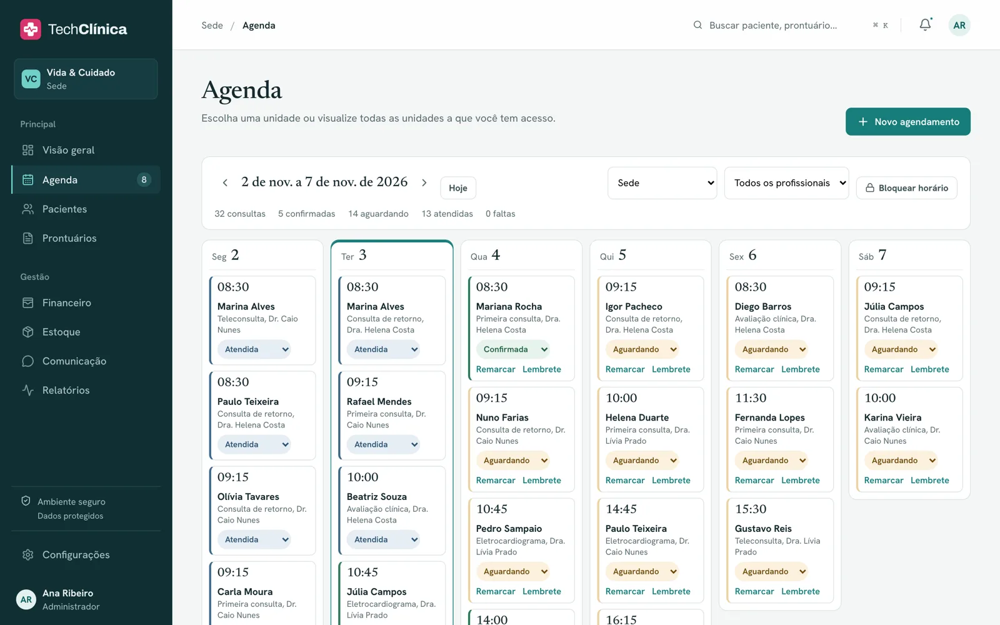
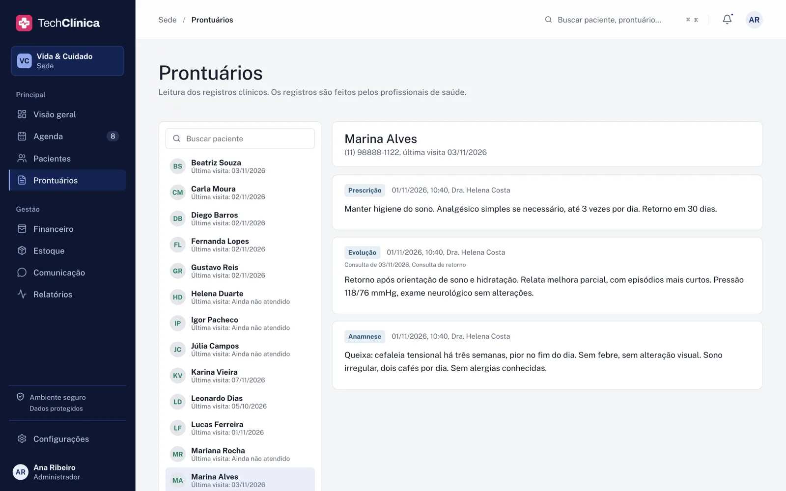
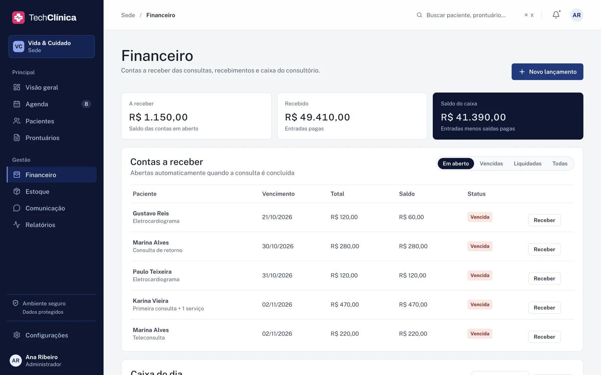
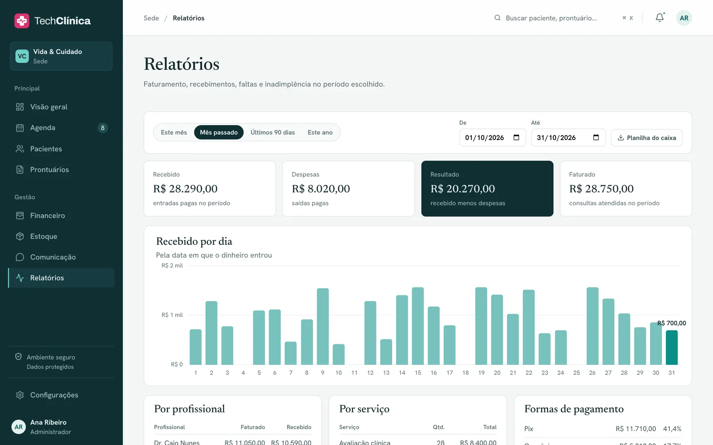
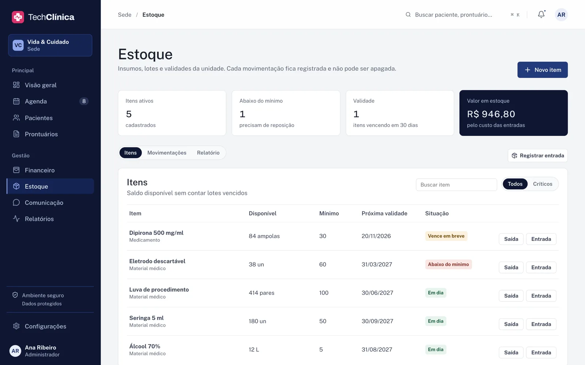
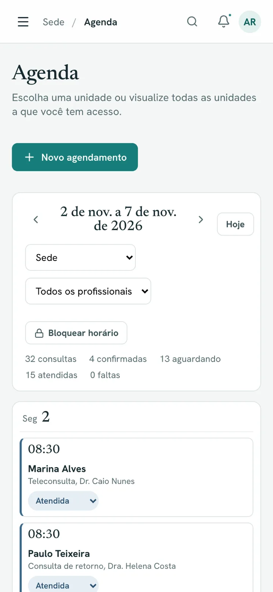

Menos cadeira vazia.
Agenda por profissional e por unidade, com horários de atendimento, bloqueios e um lembrete por e-mail para o paciente confirmar ou cancelar sem precisar ligar.
Produto próprio · gestão clínica
O consultório inteiro num só acesso. Da consulta marcada ao recibo, a recepção, os profissionais e o financeiro trabalham no mesmo sistema, cada um vendo só o que lhe cabe.
Agenda

Prontuário

Financeiro

Três frentes, um só acesso
Agenda por profissional e por unidade, com horários de atendimento, bloqueios e um lembrete por e-mail para o paciente confirmar ou cancelar sem precisar ligar.
Evolução, anamnese, prescrição, atestado e anexos em cada paciente. O texto fica criptografado, e correção entra como adendo, sem apagar o que foi escrito.
Concluir a consulta abre a conta a receber, baixa os materiais do estoque e prepara o recibo. No fim do período, os relatórios mostram o que entrou e o que falta entrar.
Agenda
Prontuário
Financeiro

Estoque

Segurança
Por aplicativo autenticador, com códigos de recuperação. Obrigatória para administradores.
Admin, recepção, profissional e financeiro, com a regra conferida no servidor. Desativar um usuário corta o acesso na hora.
Login, leitura do prontuário, anexos, criação, alteração e exclusão ficam registrados.
AES-256-GCM no texto dos registros, que seguem criptografados dentro dos backups.
Token de curta duração mantido só em memória, sessão com limite de 12 horas e bloqueio após tentativas de login com falha.
No celular
O sistema abre no navegador do celular, sem instalar nada. Quem atende consulta a agenda entre uma sala e outra, e o paciente confirma a consulta pelo link do e-mail.

A gente mostra o TechClínica com os seus serviços, profissionais e unidades.
Precisa de algo só seu? Levamos a engenharia deste produto para o projeto da sua empresa.
Conhecer os serviços